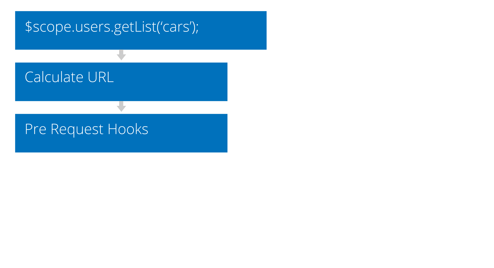
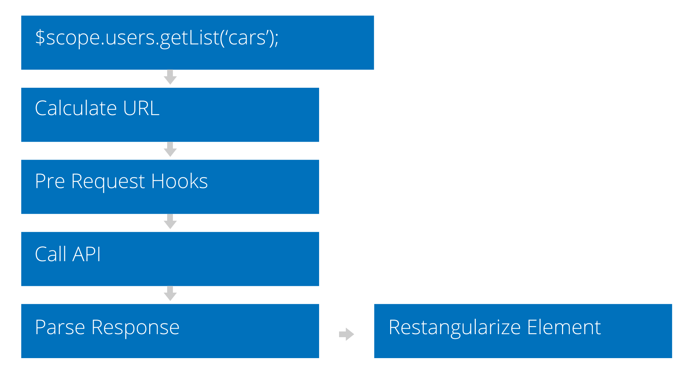
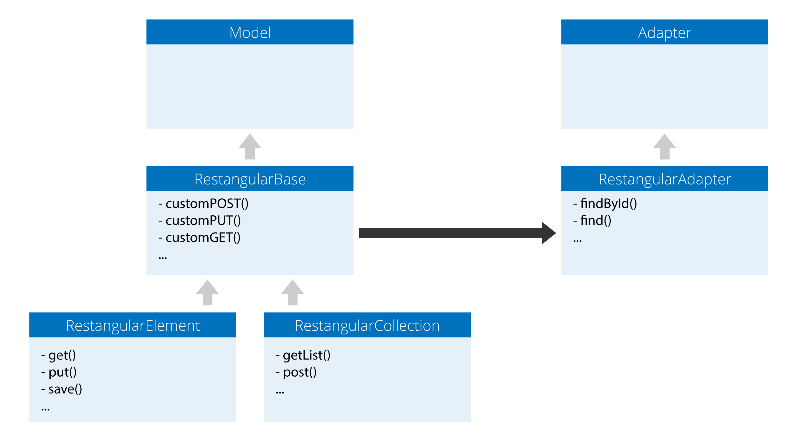

Restangular 2.0
The future and beyond
@mgonto
software developer
Auth0 Inc.
Javascript
Developer Advocate
Restangular 2.0
We should start but...
I decided to learn AngularJS
I tried using $resource for my model
Let's fetch an user
var User = $resource('/api/v1/user/:userId', {userId:'@id'});
var user = User.get({userId:123}, function() {
user.name = 'Gonto';
user.$save();
});Let's now fetch his Cars
var Car = $resource('/api/v1/user/:userId/cars/:carId',
{userId:123, carId:'@id'});
var cars = Car.query(function() {
var firstCar = cars[0];
firstCar.name = "Honda Fit";
firstCar.$save();
});I didn't like it much so I built Restangular
First we configure it
RestangularProvider.setBaseUrl('/api/v1')Let's fetch an user
Restangular.one('user', 123).get().then(function(user) {
$scope.user = user;
user.name = 'Gonto';
user.put();
});Let's now fetch his Cars
$scope.user.getList('cars').then(function(cars) {
var firstCar = cars[0];
firstCar.name = "Honda Fit";
firstCar.put();
cars.post({name: 'New Model Extra Cool'});
});There're still a few cool things missing in Restangular
That's why this talk is about Restangular 2.0
So let's start with the refactor
analyze
Restangular does


Now I can start refactoring. However..
only 1 file
really hard
refactors
Files in Restangular 1.0
- restangular.js
Files in Restangular 2.0
- models
- restangularBase.js
- restangularResource.js
- restangularCollectionResource.js
- extensions
- angularPromiseHandler.js
- angularHttpHandler.js
- services
- urlService.js
- utils.js
- fetchService.js
- transformationService.js
- config.js
- restangular.js
So let's start coding now!
Extending Models
Restangular.extendModel('users', function(model) {
model.getFullName = function() {
model.name + ' ' + model.lastName;
};
return model;
});class User extends RestangularResource {
getFullName() {
return this.name + ' ' + this.lastName;
}
}// You can set the class
Restangular.config('users').setModelclass(User)
// Or the service that will return the class
Restangular.config('users').setModelclass('User')

Hooks
Restangular.addRequestInterceptor(function(elem, operation, route, url) {
delete elem._id;
delete elem.extraInfo;
return elem
});
Restangular.addResponseInterceptor(function(data, operation, route, url, response) {
var rows = data.rows;
rows.metadata = data.metadata;
return rows;
});class User extends RestangularResource {
static beforeRequest(elem, operation, fullUrl) {
delete elem._id;
delete elem.extraInfo;
return elem;
}
static parseResponse(data, operation, url, fullResponse) {
return data.user;
}
}Restangular.addRequestInterceptor(function(elem, operation, route, url) {
delete elem._id;
delete elem.extraInfo;
return elem
});
Restangular.addRequestInterceptor('users', function(elem, operation, route, url) {
delete elem._id;
delete elem.extraInfo;
return elem
});Inner resources
Restangular.extendModel('users', function(user) {
Restangular.restangularizeCollection(user, user.messages, 'messages');
Restangular.restangularizeCollection(user, user.phones, 'telephones');
});Restangular.config('users').relations({
hasMany: ['messages', {
field: 'phones',
route: 'telephones'}
],
hasOne: 'address'
})Restangular.one('users', 23).then(function(user) {
// POST /users/23/telephones
user.phones.post({number: 12345});
var message = MessageService.$new();
message.name = 'new message';
// Post to /users/123/messages
user.messages.post(message);
});
Custom services
Custom configuration
function UserService() {
return Restangular.service('users')
.setModelclass(User)
}
UserService.getAll(); // Returns User class
Restangular.all('users').getList() // Returns RestangularResource class
Global configuration
function config() {
Restangular.config('users').setModelclass(User)
}
function UserService() {
return Restangular.service('users');
}
UserService.getAll(); // Returns User class
Restangular.all('users').getList() // Returns User class
var user = UserService.$new(); // User class
user.name = 'Gonto';
user.save(); // Does a POST
user.name = 'New gonto name';
user.save(); // Does a put
UserService.getAll().then(function(users) {
var newUser = UserService.$new();
users.post(newUser) // Adds it to the collection as well as in the server
users.remove(newUser) // Delete + Remove from collection
});
Making the Angular part optional
// You can use Angular
Restangular.setPromiseHandler(new AngularPromise($q));
Restangular.setHttpHandler(new AngularHttp($http));
// Or jQuery
Restangular.setPromiseHandler(new QPromise(q));
Restangular.setHttpHandler(new jQueryHttp($.ajax));